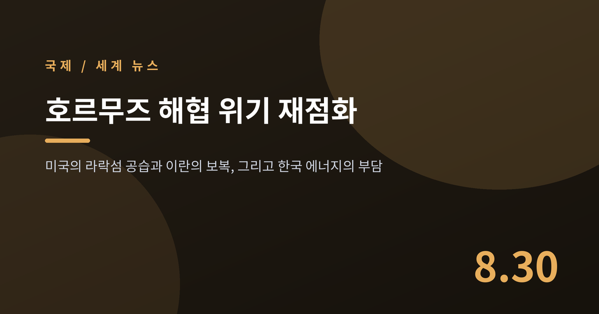
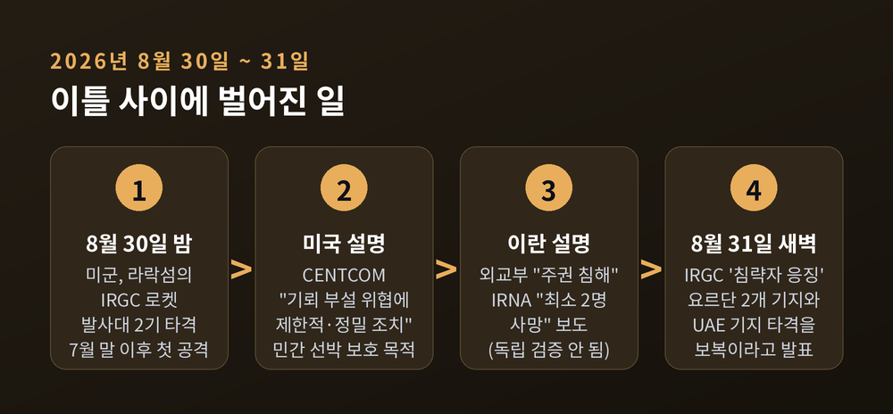
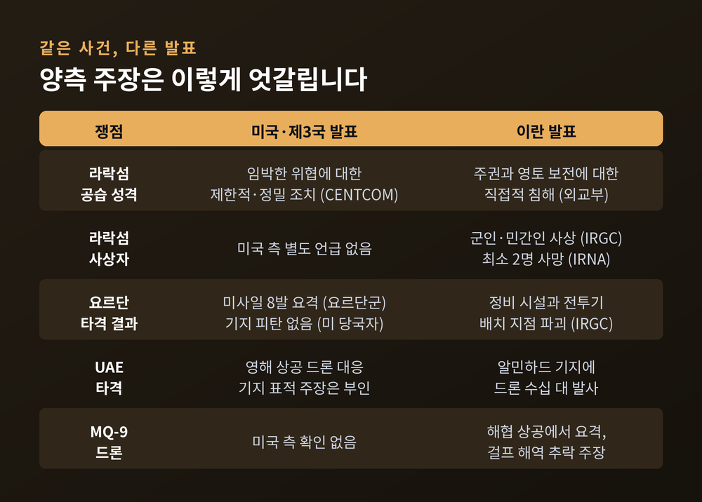
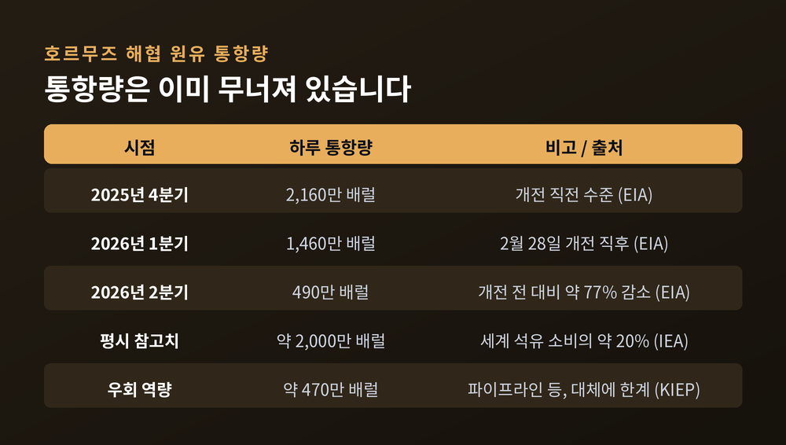
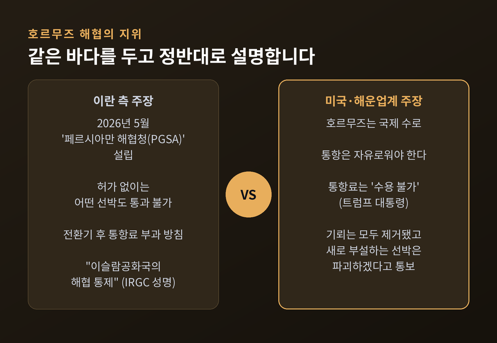
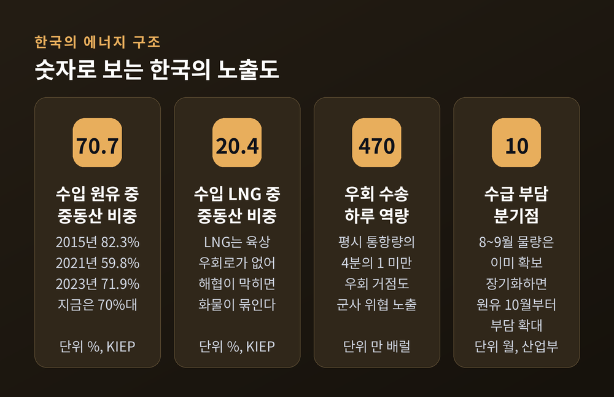
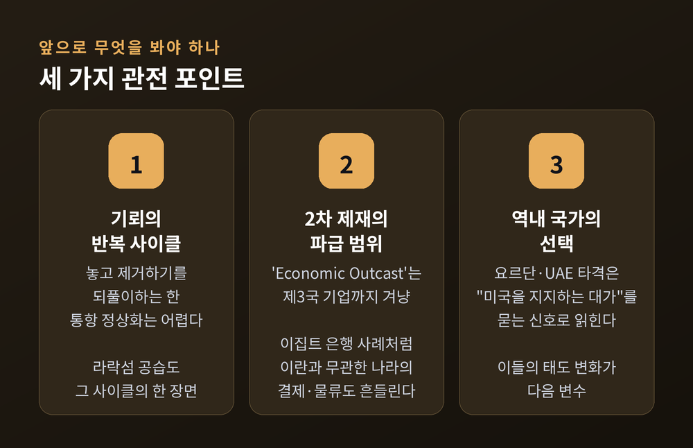

이번 글에서는 2026년 8월 30일 미국의 이란 라락섬 공습과, 그 뒤 다시 달아오른 호르무즈 해협 문제를 정리해 보겠습니다. 무슨 일이 있었는지부터 시작해, 이 좁은 바닷길이 왜 세계 경제의 급소인지, 한국의 에너지 수입과 유가에는 어떤 의미인지까지 차례로 살펴보겠습니다.
세 줄 요약
라락섬은 호르무즈 해협 안쪽에 있는 이란령 섬입니다.
미 중부사령부(CENTCOM)는 8월 30일 일요일 밤 이 섬에 있던 이란 혁명수비대(IRGC)의 로켓 발사대 2기를 타격했다고 밝혔습니다. 7월 말 이후 한 달여 만에 재개된 미군의 대이란 공격이었습니다.
미국 측 설명은 이렇습니다. 익명의 미 당국자는 알자지라 아랍어 방송에 "혁명수비대 병력이 해협을 향해 기뢰를 실은 로켓을 발사할 준비를 하는 것이 포착됐다"고 말했습니다. CENTCOM은 성명에서 "호르무즈 해협에서 임박한 위협을 가하는 기뢰 부설 병력에 대한 제한적이고 정밀한 조치"였다고 규정했습니다. 민간 선원과 상업 선박, 세계 교역의 자유로운 흐름을 보호하기 위한 것이라는 설명도 덧붙였습니다.
이란 측 설명은 정반대입니다. 이란 외교부는 이번 공습을 "국가 주권과 영토 보전에 대한 직접적 침해"라고 규탄했습니다. 혁명수비대는 이 공격으로 이란 군인과 민간인 여러 명이 죽거나 다쳤다고 발표했고, 이란 국영 IRNA는 최소 2명이 숨지고 여러 명이 다쳤다고 보도했습니다. 이 사상자 수치는 제3자에 의해 독립적으로 확인되지 않았습니다.
혁명수비대 대변인 사르다르 모헤비는 파르스통신을 통해 미국이 "전략적이고 치명적인 실수"를 저질렀으며 "경제와 군사 양쪽 영역에서" 대가를 치를 것이라고 말했습니다.

미국의 공습 몇 시간 뒤 혁명수비대는 '침략자 응징'이라는 이름의 작전을 발표했습니다. 미사일과 드론을 결합해 요르단 내 미군 기지 두 곳, 킹 후세인(King Hussein) 기지와 알아즈라크(Al Azraq) 기지를 타격했다는 내용입니다. 알아즈라크는 공식 명칭이 무와파크 살티 공군기지이며, 미 공군 제332 원정비행단이 주둔하는 곳입니다.
혁명수비대는 이 공격으로 "기술·정비 시설과 적 전투기 배치 지점을 파괴"해 상당한 피해를 입혔다고 주장했습니다. 이란은 이를 유엔 헌장에 따른 "정당한 자위권 행사"로 규정했습니다.
같은 사건에 대한 다른 쪽 설명은 이렇습니다. 요르단군은 성명에서 "새벽에 왕국 영공을 침범한 미사일 8발을 방공망이 요격했다"고 밝혔습니다. 미 당국자는 "미군 기지에 피탄은 없었다"고 말했습니다.
이란 육군은 별도로 UAE의 알민하드 공군기지에도 드론 수십 대를 보냈다고 밝혔습니다. UAE 국방부는 영해 상공에서 이란 방향에서 접근한 드론에 대응했다고 인정하면서도, 자국 공군기지가 표적이 됐다는 이란 측 주장은 부인했습니다. UAE 외교부는 "이란의 침략을 강력히 규탄한다"는 입장을 냈습니다.
여기서 한 가지 짚어둘 것이 있습니다. 전투 상황에 대한 발표는 교전 당사자가 스스로 내놓는 것입니다. 어느 쪽 주장도 그대로 사실로 받아들이기 어렵습니다. 이 글에서 계속 "누가 말했는지"를 붙이는 이유입니다.

미 해군 예비역 고위 장교 할런 울먼은 알자지라에 요르단 공격을 "정치적 성명"이라고 분석했습니다. 미국에 물리적 피해를 주려는 것이 아니라, 요르단에게 "정말 미국을 지지하겠느냐"고 묻는 신호라는 해석입니다.
마수드 페제시키안 이란 대통령은 공습 뒤 첫 발언에서 이란은 "전쟁을 원하지 않는다"면서도 "어떤 침략 앞에서도 결코 가만히 있지 않을 것"이라고 말했습니다. "역내 불안정은 어느 나라에도 이익이 되지 않는다"는 말도 함께였습니다.
호르무즈 해협은 페르시아만과 인도양을 잇는 통로입니다. 국제에너지기구(IEA) 집계로 2025년 이곳을 지나간 원유와 석유제품은 하루 평균 약 2,000만 배럴이었습니다. 전 세계가 하루에 쓰는 석유의 약 20%에 해당하는 양입니다.
액화천연가스(LNG)도 마찬가지입니다. 2024년 기준 세계 LNG 교역의 약 20%가 이 해협을 지났고, 그 대부분이 카타르산이었습니다.
문제는 대안이 마땅치 않다는 점입니다. 원유는 사우디아라비아의 동–서 파이프라인이나 UAE의 푸자이라 노선 같은 우회로가 일부 있습니다. 그러나 우회 역량은 하루 470만 배럴 수준에 그칩니다. 평시 통항량의 4분의 1에도 미치지 못합니다. 게다가 푸자이라 항 같은 우회 거점 자체가 군사적 위협에 노출됐습니다.
LNG는 사정이 더 나쁩니다. 육상 파이프라인 우회로가 사실상 없습니다. 해협을 지나지 못한 화물은 그대로 묶입니다.
그래서 이 해협은 늘 "세계에서 가장 중요한 원유 병목"으로 불려 왔습니다.
이번 위기가 특별한 이유는, 이미 상황이 나빠질 대로 나빠진 상태에서 벌어졌다는 데 있습니다.
미 에너지정보청(EIA) 집계를 보면 흐름이 뚜렷합니다. 개전 직전인 2025년 4분기 하루 2,160만 배럴이던 통항량은 2026년 1분기 1,460만 배럴로 떨어졌고, 2분기에는 490만 배럴까지 내려앉았습니다. 개전 전과 비교하면 77% 넘게 줄어든 셈입니다.
예전엔 이 해협의 위험이 "만약 막히면 어떻게 되나"라는 가정이었습니다. 지금은 이미 상당 부분 막힌 상태에서 남은 통로를 두고 다투는 국면입니다.

시장은 즉각 반응했습니다. 8월 31일 브렌트유는 배럴당 90달러대를 다시 넘어섰습니다. 집계처에 따라 2.3% 상승한 90.15달러부터 3%대 상승한 91달러 안팎까지 수치가 조금씩 다릅니다. 서부텍사스산원유(WTI)도 2% 안팎 올라 85~86달러 선에서 거래됐습니다.
같은 날 해협에서는 초대형 유조선 한 척이 기뢰로 추정되는 물체에 피격돼 화재를 일으키고 멈춰 섰다는 보도가 나왔습니다. 유조선 통항은 더 줄었습니다.
해운 쪽 부담은 유가보다 먼저 반응합니다. 2026년 6월 10일 기준으로 호르무즈 통과 선박의 전쟁위험 보험 요율은 미군 호송 여부, 선박 국적, 기뢰 위험에 따라 3.5%에서 7.5%까지 벌어졌습니다. 요율이 24시간만 유효할 만큼 변동성이 컸습니다. 운임이 올라도 해운사가 반드시 이득을 보는 것은 아닙니다. 보험료와 유류비, 대기 비용이 함께 오르기 때문입니다.
이번 사안에서 가장 헷갈리는 지점은 양측이 해협의 상태를 정반대로 설명한다는 것입니다.
이란은 2026년 5월 '페르시아만 해협청(PGSA)'을 세우고, 이곳이 발급한 통항 허가 없이는 어떤 선박도 해협을 지날 수 없다고 선언했습니다. 60일 전환기가 끝나면 통항료를 물리겠다는 방침도 밝혔습니다. 8월 31일 혁명수비대 성명에는 "이슬람공화국의 해협 통제"라는 표현이 그대로 담겼습니다.
미국과 해운업계의 입장은 다릅니다. 호르무즈는 국제 수로이며 통항은 자유로워야 한다는 것입니다. 트럼프 대통령은 통항료를 "수용 불가"로 못박았습니다. 지난주에는 해협의 기뢰가 모두 폭파되거나 제거됐으며, 새로 기뢰를 놓는 배는 파괴하겠다고 이란에 통보했다고 밝히기도 했습니다.
같은 바다를 두고 한쪽은 "우리가 통제한다"고 하고, 다른 쪽은 "우리가 열어 두고 지킨다"고 말합니다. 라락섬 공습은 바로 이 인식의 간극 위에서 벌어진 일입니다.

이란은 8월 28일 해협 재개방 조건 목록을 만들고 있다고 밝혔습니다. 역내 전쟁 종식, 미국의 이란 항구 해상봉쇄 해제, 전쟁 피해 배상, 동결 자산 반환이 요구 사항에 포함된 것으로 전해졌습니다.
2026년 2월 28일 미국과 이스라엘의 이란 공격으로 시작된 이 전쟁은 개전 6개월을 넘겨 일곱 달째로 접어들었습니다. 6월 17일 양국은 군사작전 중단과 60일 핵 협상 시한을 담은 양해각서(MOU)에 서명했지만, 7월 초 공습이 재개되며 사실상 무너졌습니다.
그 뒤 미국의 무게중심은 폭격에서 금융으로 옮겨 갔습니다.
미국은 4월 16일부터 'Operation Economic Fury'를 진행해 왔습니다. 스콧 베선트 재무장관은 이를 "폭격 작전의 금융판 등가물"이라고 표현했습니다. 그리고 8월 24일, 'Operation Economic Outcast'가 시작됐습니다. 베선트 장관은 이를 "경제판 D-데이"라고 불렀습니다.
첫날 78개 대상이 지정됐습니다. 항공·디지털자산·금·해운·기술 다섯 개 부문이 2차 제재 대상으로 새로 열렸습니다. 2차 제재는 미국 밖에서 이뤄진 거래에도 적용됩니다. 두바이나 뭄바이의 기업이 미국 영토와 무관한 거래로 달러 결제망에서 잘려 나갈 수 있다는 뜻입니다.
실제 사례도 나왔습니다. 8월 30일 미 재무부는 이집트 2위 은행 방크 미스르의 UAE 영업을 달러 시스템에서 차단하는 방안을 제안했습니다. 이란 관련 네트워크를 위해 18억 달러를 처리했다는 혐의입니다.
이란은 이 압박이 통하지 않을 것이라고 주장합니다. 수십 년간 제재 아래 살아온 나라이며, 새 제재는 오히려 미국의 군사적 접근이 실패했음을 보여준다는 것입니다. 이란 군 지도부는 "굴복하지 않겠다"고 밝혔습니다.
알자지라 워싱턴 특파원은 이번 주고받기식 교전이 "외교적 출구를 만들려던 미 외교관들이 원치 않던 시나리오"라고 전했습니다. 협상과 압박이 동시에 진행되다 보니, 어느 쪽도 상대의 다음 수를 읽지 못하는 상황이 이어지고 있습니다.
여기서부터가 우리에게 실질적인 부분입니다.
대외경제정책연구원(KIEP)이 2026년 4월 내놓은 자료에 따르면, 한국이 수입하는 원유의 70.7%가 중동산입니다. LNG도 20.4%가 중동에서 들어옵니다. 사우디아라비아, UAE, 이라크, 쿠웨이트 등 주요 수입처는 모두 호르무즈 해협을 이용합니다.
중동 의존도는 한때 낮아졌던 적이 있습니다. 2015년 82.3%에서 2021년 59.8%까지 내려갔습니다. 그러나 2023년 71.9%로 반등했고, 이후 3년 연속 70% 안팎을 유지하고 있습니다.
다변화가 어려웠던 이유를 KIEP는 이렇게 정리합니다. 지리적으로 가깝고 수송 기간이 짧다는 점, 국내 정유 설비가 중동 유종에 맞춰져 있다는 점, 러시아–우크라이나 전쟁 이후 중동산 접근성이 오히려 넓어졌다는 점입니다. 운송비만 놓고 봐도 중동산은 중동을 제외한 세계 평균보다 배럴당 1.12달러가량 저렴합니다. 경제적으로 합리적인 선택이 쌓여 구조적 취약점이 된 셈입니다.
정부도 손을 놓고 있지는 않습니다. 산업통상자원부는 8월 2일 김정관 장관 주재로 '중동 전쟁 실물경제 긴급 점검회의'를 열었습니다. 호르무즈 해협과 바브엘만데브 해협의 통항이 동시에 막히는 상황까지 가정한 논의였습니다.
점검 결과 석유는 8~9월 도입 물량을 전년 평균 이상 확보했고, 10월 물량도 순차 확보 중입니다. 나프타는 8월 물량을 전년 수준으로 확보했습니다. 다만 사태가 길어지면 원유는 10월, 나프타는 9월 이후 수급 부담이 커질 수 있다는 것이 정부 판단입니다. 필요하면 비축유 방출과 스와프 카드를 쓴다는 방침도 함께 밝혔습니다.
정리하면 지금 당장의 주유소 가격보다, 10월 이후의 도입 계약과 해상 보험료가 더 중요한 변수입니다.

미 의회조사국(CRS)은 이 전쟁의 갈래를 크게 두 가지로 봅니다.
하나는 '불안한 휴전'입니다. 포괄 합의는 없지만, 경제적 압박과 이미 입은 피해 때문에 양측이 적극적 교전만 멈추는 경우입니다. 다른 하나는 '협상 타결'입니다. 이란이 핵프로그램과 미사일·대리세력 문제에서 일부 타협하고, 그 대가로 제재가 풀리는 형태입니다.
다만 8월 말 현재 협상의 온도는 낮습니다. 압바스 아락치 이란 외교장관은 미국과 협상하고 있지 않으며, 미국이 6월 잠정 합의를 계속 위반하는 한 대화를 시작하지 않겠다고 했습니다. 이란 외교부는 MOU 연장 협상 자체를 배제했습니다. 트럼프 대통령은 알자지라에 "시간표가 없다", "서두르지 않는다"고 밝혔습니다. 영국·독일·프랑스는 새 핵합의가 이뤄지면 일부 제재를 풀 용의가 있다는 입장입니다.
제가 보기에 앞으로 눈여겨볼 지점은 셋입니다.
첫째, 기뢰를 놓고 제거하는 사이클이 반복되는 한 통항 정상화는 어렵습니다. 이번 라락섬 공습 자체가 그 사이클의 한 장면이었습니다.
둘째, 2차 제재의 파급입니다. 이집트 은행 사례처럼 압박이 제3국 금융기관으로 번지면, 이란과 직접 관계가 없는 나라의 결제와 물류까지 흔들립니다.
셋째, 역내 국가들의 선택입니다. 이란이 요르단과 UAE를 때린 것은 "미국을 지지하는 대가"를 묻는 신호로 읽힙니다. 이들의 태도가 바뀌면 판이 다시 움직입니다.

한 가지는 인정하고 넘어가야겠습니다. 이 사안은 예측이 잘 통하지 않는 영역입니다. 6월의 양해각서도 두 달을 채우지 못했습니다. 지금 나오는 어떤 전망도 다음 한 발의 미사일에 뒤집힐 수 있습니다.
끝으로 한 마디만 더 드리겠습니다.
이 이야기는 결국 숫자로 환산되지만, 그 숫자 뒤에는 라락섬에서 다친 사람들과 요르단 상공을 지나간 미사일이 있습니다. 유가 그래프만 보다 보면 그 부분이 잘 보이지 않습니다.
— 좁은 바닷길 하나가 막히면, 그 대가는 가장 멀리 있는 사람에게까지 도착합니다.
호르무즈가 다시 열릴 것이냐고 물으신다면, 저는 아직 답을 갖고 있지 않습니다. 다만 그때까지 우리가 어떤 준비를 해두었는지는 남을 것이라고 생각합니다.
이 글은 공개된 보도와 공공기관 자료를 바탕으로 사안을 정리한 정보 제공용 글입니다. 특정 자산에 대한 투자 권유가 아니며, 언급된 유가·에너지 관련 수치는 투자 판단의 근거로 삼기에 적합하지 않습니다. 투자 결정에 따른 책임은 투자자 본인에게 있습니다.
본문에 인용한 교전 당사국의 발표는 각 당사자의 주장이며, 독립적으로 검증되지 않은 내용이 포함되어 있습니다.